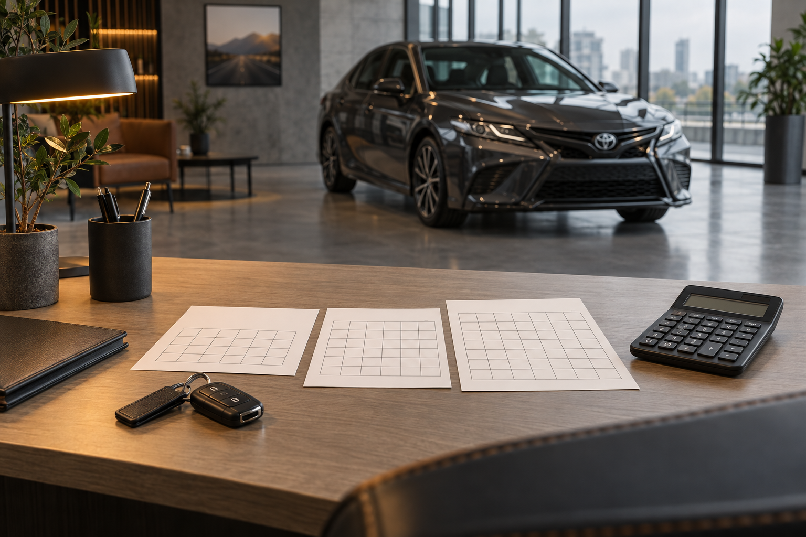
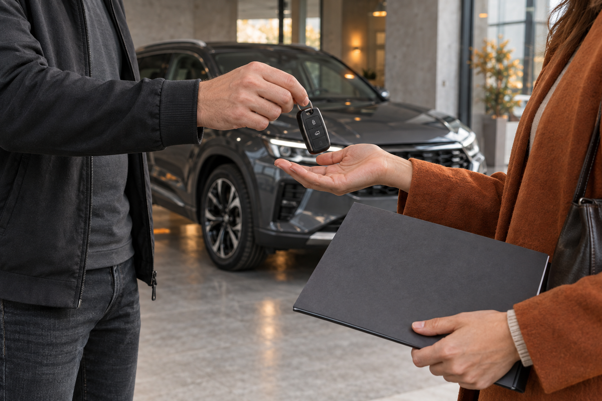
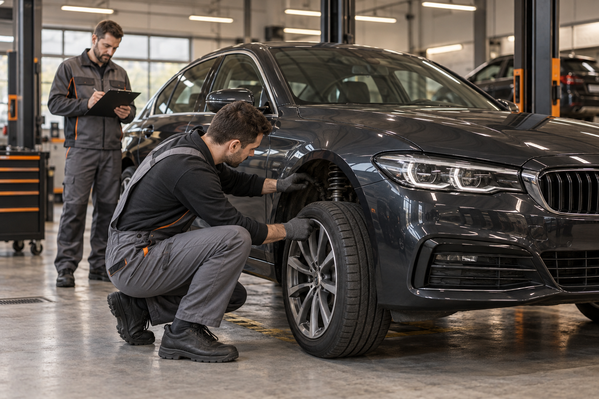

ФинансыНа какой срок лучше оформлять рассрочку на автомобиль
Сравниваем сроки от 12 до 36 месяцев и выбираем комфортный платёж без лишней нагрузки на бюджет.
↗Простые ответы на вопросы о рассрочке, выборе автомобиля и безопасном оформлении сделки.
24 материала о покупке, выборе и эксплуатации автомобиля

ФинансыСравниваем сроки от 12 до 36 месяцев и выбираем комфортный платёж без лишней нагрузки на бюджет.
↗Разбираем требования к водителю и документы для оформления.
↗Пять причин выбрать понятный график платежей вместо банковского кредита.
↗
УсловияКак устроена схема, кому она подходит и когда автомобиль переходит в собственность.
↗
Гид S-AUTOОт подачи заявки и проверки автомобиля до последнего платежа и регистрации собственности.
↗Специалист S-AUTO подберёт варианты и рассчитает условия рассрочки под ваш бюджет.